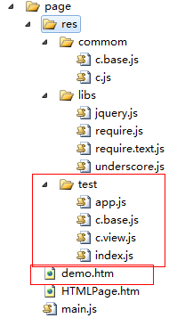
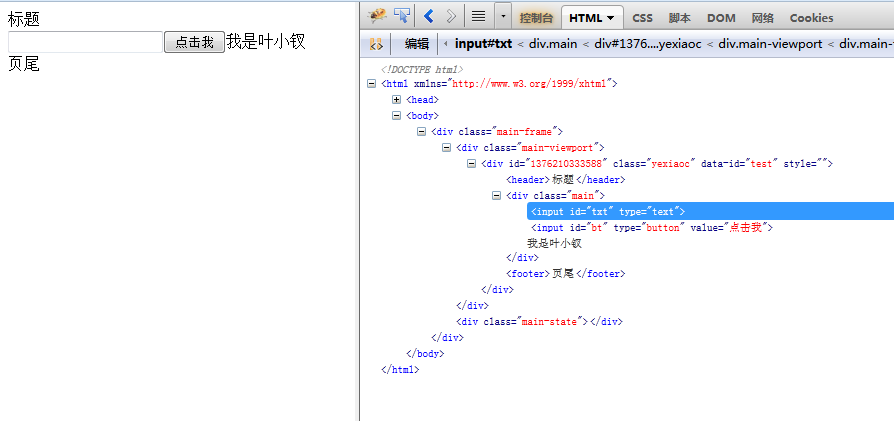
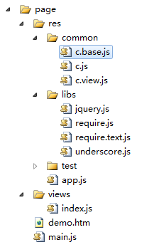

前言
PS：回家发现代码没拷贝回来，明天继续吧。。。
开始之前先扯点其它的，我上午去理发，居然才7元，但是那个阿妈给我搞成和尚的造型了，我想说点什么，但转念一想节约点洗头水也好！！！
PS：其实主要原因是我掉头发。。。。。。
好了，接昨天的内容：【单页应用】一起来单页应用吧，实现简单微博功能！（上）
昨天我们一起准备了两大核心，继承与view，虽说有问题，而且必定有问题，但是我们暂时不管他。
我们先继续先往下面写，到最后整体流程拉通后再一起优化就好，现在去纠结也不一定有结果，于是我们开始吧。
继承之实现APP
我们这里APP要干的事情，与其说担任MVC中控制器的角色，不如说他就是充当了一下路由选择的角色，根据不同的URL导向不同的view，并且会管理hash。
由于我们会处理request请求，压入hash以达到后退功能有效，所以这里先来实现一个hash类吧
实现Hash对象
先来一个辅助函数，用于计算某个字符在数组的位置：
1 var indexOf = function (k, arr) { 2 if (!arr) { 3 return -1; 4 } 5 //若是对象本身便居然indexof，便使用自身的，比如字符串 6 if (arr.indexOf) { 7 return arr.indexOf(k); 8 } 9 for (var i = 0, len = arr.length; i < len; i++) { 10 if (arr[i] == k) { 11 return i; 12 } 13 } 14 return -1; 15 };
PS：这个hash的实现不算太好，后面也许会改动
1 b.Hash = b.Class({ 2 _propertys_: function () { 3 this.keys = []; 4 this.values = []; 5 }, 6 init: function (obj) { 7 (typeof obj == 'object') || (obj = {}); //??? 8 for (var k in obj) { 9 if (obj.hasOwnProperty(k)) { 10 this.keys.push(k); 11 this.values.push(obj[k]); 12 } 13 } 14 }, 15 length: function () { 16 return this.keys.length; 17 }, 18 getItem: function (k) { 19 var index = indexOf(k, this.keys); 20 if (index < 0) { 21 return null; 22 } 23 return this.keys[index]; 24 }, 25 getKey: function (i) { 26 return this.keys[i]; 27 }, 28 getValue: function (i) { 29 return this.values[i]; 30 }, 31 add: function (k, v) { 32 return this.push(k, v); 33 }, 34 del: function (k) { 35 var index = indexOf(k, this.keys); 36 return this.delByIndex(index); 37 }, 38 delByIndex: function (index) { 39 if (index < 0) return this; 40 this.keys.splice(index, 1); 41 this.vaules.splice(index, 1); 42 return this; 43 }, 44 //移除栈顶hash，并返回 45 pop: function () { 46 if (!this.keys.length) return null; 47 this.keys.pop(); 48 return this.values.pop(); 49 }, 50 push: function (k, v, order) { 51 if (typeof k == 'object' && !v) { 52 for (var i in k) { 53 if (k.hasOwnProperty(i)) { 54 this.push(i, k[i], order); 55 } 56 } 57 } else { 58 var index = indexOf(k, this.keys); 59 if (index < 0 || order) { 60 if (order) this.del(k); 61 this.keys.push[k]; 62 this.values.push[v]; 63 } else { 64 this.values[index] = v; 65 } 66 } 67 }, 68 //查找hash表，返回key 69 indexOf: function (v) { 70 var index = indexOf(v, this.vaules); 71 if (index >= 0) { 72 return this.keys[index]; 73 } 74 return -1; 75 }, 76 each: function (handler) { 77 if (typeof handler == 'function') { 78 for (var i = 0, len = this.length(); i < len; i++) { 79 handler.call(this, this.keys[i], this.vaules[i]); 80 } 81 } 82 }, 83 getObj: function () { 84 var obj = {}; 85 for (var i = 0, len = this.length(); i < len; i++) { 86 obj[this.keys[i]] = this.values[i]; 87 } 88 return obj; 89 } 90 });
此hash对象基本就是数组的写照，各位可以对照着看，于是我们继续我们的app
app雏形
1 var Application = new b.Class({ 2 _propertys_: function () { 3 var scope = this; 4 this.webRoot = ''; //应用跟目录 5 this.head = $('head'); 6 this.body = $('body'); 7 this.viewRoot = 'views/'; //视图所在目录 8 this.defaultView = 'index'; //默认加载视图 9 10 this.request; //请求对象 11 this.viewPath; //当前请求视图路径，解析request得出 12 this.mainFrame; //主框架 13 this.viewPort; //视图框架 14 this.stateDom; //状态栏 15 16 this.views = new b.Hash(); //views保存浏览器存储的hash 17 this.curView; //当前视图 18 this.interface = {}; //提供给视图访问的接口，暂时不管 19 this.history = []; //历史记录 20 21 // this.stopListening = false;//是否开启监听 22 23 this.onHashChange = function () { 24 scope.history.push(window.location.href); 25 var url = decodeURIComponent(window.location.hash.replace(/^#+/i, '')).toLowerCase(); 26 scope._onHashChange(url); 27 }; 28 29 this.lastHash = ''; 30 this.lastFullHash = ''; 31 this.isChangeHash = false; //hash是否发生变化 32 }, 33 init: function (opts) { 34 //为属性赋值 35 opts = opts || {}; 36 for (var k in opts) { 37 this[k] = opts[k]; 38 } 39 this.createViewPort(); 40 this.bindEvent(); //事件绑定 41 }, 42 43 //创建app页面基本框架，此处不能使用id，因为。。。 44 createViewPort: function () { 45 var htm = [ 46 '<div class="main-frame">', 47 '<div class="main-viewport"></div>', 48 '<div class="main-state"></div>', 49 '</div>' 50 ].join(''); 51 this.mainframe = $(htm); 52 this.viewport = this.mainframe.find('.main-viewport'); 53 this.statedom = this.mainframe.find('.main-state'); 54 var body = $('body'); 55 body.html(''); 56 body.append(this.mainframe); 57 }, 58 //！！！！！！非常重要哦！！！！！！ 59 bindEvent: function () { 60 var scope = this; 61 //暂时不使用requireJS 62 // requirejs.onError = function () {}; 63 $(window).bind('hashchange', this.onHashChange); 64 }, 65 _onHashChange: function (url) { 66 url = url.replace(/^#+/i, ''); 67 var req = this.parseHash(url); 68 69 this.request = req; 70 this.viewPath = this.viewPath || this.defaultView; 71 this.loadView(this.viewPath); //！！！重要的视图加载 72 }, 73 //该方法慢慢看吧。。。 74 parseHash: function (hash) { 75 var fullhash = hash, 76 hash = hash.replace(/([^\|]*)(?:\|.*)?$/img, '$1'), 77 h = /^([^?&|]*)(.*)?$/i.exec(hash), 78 vp = h[1] ? h[1].split('!') : [], 79 viewpath = (vp.shift() || '').replace(/(^\/+|\/+$)/i, ''), 80 path = vp.length ? vp.join('!').replace(/(^\/+|\/+$)/i, '').split('/') : [], 81 q = (h[2] || '').replace(/^\?*/i, '').split('&'), 82 query = {}, y; 83 this.isChangeHash = !!(!this.lastHash && fullhash === this.lashFullHash) || !!(this.lastHash && this.lastHash !== hash); 84 if (q) { 85 for (var i = 0; i < q.length; i++) { 86 if (q[i]) { 87 y = q[i].split('='); 88 y[1] ? (query[y[0]] = y[1]) : (query[y[0]] = true); 89 } 90 } 91 } 92 93 this.lastHash = hash; 94 this.lashFullHash = fullhash; 95 return { 96 viewpath: viewpath, 97 path: path, 98 query: query, 99 root: location.pathname + location.search 100 }; 101 }, 102 //!!!非常重要 103 loadView: function (viewPath) { 104 var id = viewPath; 105 var scope = this; 106 //此处本来应该判断是否已经有该视图，但是我们暂时不管，我们只要加载了相关视图就算成功 107 /* 108 一些操作 109 */ 110 111 //此处应该加载我们的js文件 112 $.getScript(this.buildUrl(viewPath), function () { 113 var view = new PageView(); 114 view.show(); 115 scope.viewport.append(curView.$el); 116 var s = ''; 117 }); 118 //！！！暂时不使用requireJS 119 // var self = this; 120 // requirejs([this.buildUrl(path)], function (View) { 121 // callback && callback.call(self, View); 122 // }); 123 }, 124 buildUrl: function (path) { 125 return this.viewRoot = path; 126 } 127 });
好了，至此，我们粗制滥造版app结束，我们来试试先，再一并讲解其主要流程。
简单测试
html代码：
1 <!DOCTYPE html> 2 <html xmlns="http://www.w3.org/1999/xhtml"> 3 <head> 4 <meta charset="utf-8" /> 5 <title></title> 6 <script src="res/libs/jquery.js" type="text/javascript"></script> 7 <script src="res/test/c.base.js" type="text/javascript"></script> 8 </head> 9 <body> 10 </body> 11 <script src="res/test/app.js" type="text/javascript"></script> 12 <script type="text/javascript"> 13 var app = new Application(); 14 15 </script> 16 </html>
base代码：


1 /// <reference path="../libs/underscore.js" /> 2 3 /// <reference path="../libs/jquery.js" /> 4 5 /// <reference path="../libs/require.js" /> 6 7 /// <reference path="../libs/require.text.js" /> 8 9 10 11 12 var b = {};//base 13 var slice = [].slice; 14 var indexOf = function (k, arr) { 15 if (!arr) { 16 return -1; 17 } 18 //若是对象本身便居然indexof，便使用自身的，比如字符串 19 if (arr.indexOf) { 20 return arr.indexOf(k); 21 } 22 for (var i = 0, len = arr.length; i < len; i++) { 23 if (arr[i] == k) { 24 return i; 25 } 26 } 27 return -1; 28 }; 29 30 b.Class = function (supClass, childAttr) { 31 //若是传了第一个类，便继承之；否则实现新类 32 if (typeof supClass === 'object') { 33 childAttr = supClass; 34 supClass = function () { }; 35 } 36 37 // var supProto = supClass.prototype; 38 var newClass = function () { 39 this._propertys_ && this._propertys_(); 40 this.init && this.init.apply(this, arguments); 41 }; 42 newClass.prototype = new supClass(); 43 44 var supInit = newClass.prototype.init || function () { }; 45 var childInit = childAttr.init || function () { }; 46 var _supAttr = newClass.prototype._propertys_ || function () { }; 47 var _childAttr = childAttr._propertys_ || function () { }; 48 49 for (var k in childAttr) { 50 //_propertys_中作为私有属性 51 childAttr.hasOwnProperty(k) && (newClass.prototype[k] = childAttr[k]); 52 } 53 54 //继承的属性有可能重写init方法 55 if (arguments.length && arguments[0].prototype && arguments[0].prototype.init === supInit) { 56 //重写新建类，初始化方法，传入其继承类的init方法 57 newClass.prototype.init = function () { 58 var scope = this; 59 var args = [function () { 60 supInit.apply(scope, arguments); 61 } ]; 62 childInit.apply(scope, args.concat(slice.call(arguments))); 63 }; 64 } 65 66 //内部属性赋值 67 newClass.prototype._propertys_ = function () { 68 _supAttr.call(this); 69 _childAttr.call(this); 70 }; 71 72 //成员属性 73 for (var k in supClass) { 74 supClass.hasOwnProperty(k) && (newClass[k] = supClass[k]); 75 } 76 return newClass; 77 }; 78 79 b.AbstractView = b.Class({ 80 //基本view应该具有的属性 81 _propertys_: function () { 82 this.id = (new Date()).getTime(); //唯一pageID 83 this.rootBox = $('body'); //视图容器 84 this.root = $('<div/>'); //视图的根元素，可进行设置 85 this.header = null; 86 this.footer = null; 87 this.template = '';//可能的模板 88 this.isCreated = false;//是否创建完毕 89 this.status = b.AbstractView.STATE_NOTCREATE;//当前状态 90 }, 91 init: function () { 92 }, 93 //定义将要用到的事件，其中元素选取都会以root为标准，所以使用内部提供函数吧 94 events: { 95 'selector,eventType': 'func' 96 }, 97 //默认属性 98 attrs: { 99 }, 100 //获取视图元素 101 find: function (selector) { 102 return this.root.find(selector); 103 }, 104 //创建dom 105 create: function (opts) { 106 if(!this.isCreated && this.status != b.AbstractView.STATE_ONCREATE) { 107 var attr = opts && opts.attr; 108 var html = this.createHtml(); 109 this.initRoot(attr);//初始化root 110 this.hide(); 111 this.rootBox.append(this.root); 112 this.root.html(html); 113 this.trigger('onCreate');//触发正在创建事件，其实这里都创建完了 114 this.status = b.AbstractView.STATE_ONCREATE; 115 this.isCreated = true; 116 this.bindEvent(); 117 } 118 }, 119 //呈现/渲染视图 120 show: function (callback) { 121 if(this.status == b.AbstractView.STATE_ONSHOW) { 122 return; 123 } 124 this.create(); 125 this.root.show(); 126 this.trigger('onShow'); 127 this.status = b.AbstractView.STATE_ONSHOW 128 callback && (typeof callback == 'function') && callback.call(this); 129 this.trigger('onLoad'); 130 }, 131 //隐藏dom 132 hide: function (callback) { 133 if(!this.root || this.status == b.AbstractView.STATE_ONHIDE) { 134 return; 135 } 136 this.root.hide(); 137 this.trigger('onHide'); 138 this.status = b.AbstractView.STATE_ONHIDE; 139 callback && (typeof callback == 'function') && callback(); 140 }, 141 //事件绑定 142 bindEvent: function () { 143 var events = this.events; 144 for(var k in events) { 145 var sec_type = k.replace(/\s/i, '').split(','); 146 var func = events[k]; 147 if(sec_type &&sec_type.length == 2 && typeof func == 'function') { 148 var selector = sec_type[0]; 149 var type = sec_type[1]; 150 var scope = this; 151 this.find(selector).on(type, function () { 152 func.call(scope, $(this)); 153 }) 154 } 155 } 156 }, 157 //此处可以配合模板与相关参数组成html 158 //解析模板也放到此处 159 createHtml: function () { 160 throw new Error('请重新定义createHtml方法'); 161 }, 162 initRoot: function () { 163 var attr = this.attrs; 164 if(!attr) { 165 return; 166 } 167 for(var k in attr) { 168 if(k == 'className') { 169 this.root.attr('class', attr[k]); 170 }else { 171 this.root.attr(k, attr[k]); 172 } 173 } 174 this.root.attr('id', this.id); 175 }, 176 //触发事件 177 trigger: function (k, args) { 178 var event = this[k]; 179 args = args || []; 180 if(event && typeof event == 'function') { 181 event.apply(this, args) 182 } 183 }, 184 setRootBox: function (dom) { 185 this.rootBox = dom; 186 }, 187 setAttr: function (k, v) { 188 this.root.attr(k, v); 189 }, 190 getAttr: function (k) { 191 return this.root.attr(k); 192 }, 193 setCss: function (k, v) { 194 this.root.css(k, v); 195 }, 196 getCss: function (k) { 197 return this.root.css(k); 198 }, 199 //dom创建后执行 200 onCreate: function () { 201 202 }, 203 //dom创建后数据加载时执行，用于加载后执行我们的逻辑 204 onLoad: function () { 205 206 }, 207 //dom创建后，未显示 208 onShow: function () { 209 210 }, 211 //dom隐藏前 212 onHide: function () { 213 214 } 215 }); 216 217 //组件状态,未创建 218 b.AbstractView.STATE_NOTCREATE = 'notCreate'; 219 //组件状态,已创建但未显示 220 b.AbstractView.STATE_ONCREATE = 'onCreate'; 221 //组件状态,已显示 222 b.AbstractView.STATE_ONSHOW = 'onShow'; 223 //组件状态,已隐藏 224 b.AbstractView.STATE_ONHIDE = 'onHide'; 225 226 b.Hash = b.Class({ 227 _propertys_: function () { 228 this.keys = []; 229 this.values = []; 230 }, 231 init: function (obj) { 232 (typeof obj == 'object') || (obj = {}); //??? 233 for (var k in obj) { 234 if (obj.hasOwnProperty(k)) { 235 this.keys.push(k); 236 this.values.push(obj[k]); 237 } 238 } 239 }, 240 length: function () { 241 return this.keys.length; 242 }, 243 getItem: function (k) { 244 var index = indexOf(k, this.keys); 245 if (index < 0) { 246 return null; 247 } 248 return this.keys[index]; 249 }, 250 getKey: function (i) { 251 return this.keys[i]; 252 }, 253 getValue: function (i) { 254 return this.values[i]; 255 }, 256 add: function (k, v) { 257 return this.push(k, v); 258 }, 259 del: function (k) { 260 var index = indexOf(k, this.keys); 261 return this.delByIndex(index); 262 }, 263 delByIndex: function (index) { 264 if (index < 0) return this; 265 this.keys.splice(index, 1); 266 this.vaules.splice(index, 1); 267 return this; 268 }, 269 //移除栈顶hash，并返回 270 pop: function () { 271 if (!this.keys.length) return null; 272 this.keys.pop(); 273 return this.values.pop(); 274 }, 275 push: function (k, v, order) { 276 if (typeof k == 'object' && !v) { 277 for (var i in k) { 278 if (k.hasOwnProperty(i)) { 279 this.push(i, k[i], order); 280 } 281 } 282 } else { 283 var index = indexOf(k, this.keys); 284 if (index < 0 || order) { 285 if (order) this.del(k); 286 this.keys.push[k]; 287 this.values.push[v]; 288 } else { 289 this.values[index] = v; 290 } 291 } 292 }, 293 //查找hash表，返回key 294 indexOf: function (v) { 295 var index = indexOf(v, this.vaules); 296 if (index >= 0) { 297 return this.keys[index]; 298 } 299 return -1; 300 }, 301 each: function (handler) { 302 if (typeof handler == 'function') { 303 for (var i = 0, len = this.length(); i < len; i++) { 304 handler.call(this, this.keys[i], this.vaules[i]); 305 } 306 } 307 }, 308 getObj: function () { 309 var obj = {}; 310 for (var i = 0, len = this.length(); i < len; i++) { 311 obj[this.keys[i]] = this.values[i]; 312 } 313 return obj; 314 } 315 });
app代码：
1 /// <reference path="../libs/underscore.js" /> 2 3 /// <reference path="../libs/jquery.js" /> 4 5 /// <reference path="../libs/require.js" /> 6 7 /// <reference path="../libs/require.text.js" /> 8 9 10 11 var Application = new b.Class({ 12 _propertys_: function () { 13 var scope = this; 14 this.webRoot = ''; //应用跟目录 15 this.head = $('head'); 16 this.body = $('body'); 17 this.viewRoot = 'res/test/'; //视图所在目录 18 this.defaultView = 'index'; //默认加载视图 19 20 this.request; //请求对象 21 this.viewPath; //当前请求视图路径，解析request得出 22 this.mainFrame; //主框架 23 this.viewPort; //视图框架 24 this.stateDom; //状态栏 25 26 this.views = new b.Hash(); //views保存浏览器存储的hash 27 this.curView; //当前视图 28 this.interface = {}; //提供给视图访问的接口，暂时不管 29 this.history = []; //历史记录 30 31 // this.stopListening = false;//是否开启监听 32 33 this.onHashChange = function () { 34 scope.history.push(window.location.href); 35 var url = decodeURIComponent(window.location.hash.replace(/^#+/i, '')).toLowerCase(); 36 scope._onHashChange(url); 37 }; 38 39 this.lastHash = ''; 40 this.lastFullHash = ''; 41 this.isChangeHash = false; //hash是否发生变化 42 }, 43 init: function (opts) { 44 console.log('app init'); 45 //为属性赋值 46 opts = opts || {}; 47 for (var k in opts) { 48 this[k] = opts[k]; 49 } 50 this.createViewPort(); 51 this.bindEvent(); //事件绑定 52 }, 53 54 //创建app页面基本框架，此处不能使用id，因为。。。 55 createViewPort: function () { 56 var htm = [ 57 '<div class="main-frame">', 58 '<div class="main-viewport"></div>', 59 '<div class="main-state"></div>', 60 '</div>' 61 ].join(''); 62 this.mainframe = $(htm); 63 this.viewport = this.mainframe.find('.main-viewport'); 64 this.statedom = this.mainframe.find('.main-state'); 65 var body = $('body'); 66 body.html(''); 67 body.append(this.mainframe); 68 }, 69 //！！！！！！非常重要哦！！！！！！ 70 bindEvent: function () { 71 var scope = this; 72 //暂时不使用requireJS 73 // requirejs.onError = function () {}; 74 $(window).bind('hashchange', this.onHashChange); 75 }, 76 _onHashChange: function (url) { 77 url = url.replace(/^#+/i, ''); 78 var req = this.parseHash(url); 79 80 this.request = req; 81 this.viewPath = this.viewPath || this.defaultView; 82 this.loadView(this.viewPath); //！！！重要的视图加载 83 }, 84 //该方法慢慢看吧。。。 85 parseHash: function (hash) { 86 var fullhash = hash, 87 hash = hash.replace(/([^\|]*)(?:\|.*)?$/img, '$1'), 88 h = /^([^?&|]*)(.*)?$/i.exec(hash), 89 vp = h[1] ? h[1].split('!') : [], 90 viewpath = (vp.shift() || '').replace(/(^\/+|\/+$)/i, ''), 91 path = vp.length ? vp.join('!').replace(/(^\/+|\/+$)/i, '').split('/') : [], 92 q = (h[2] || '').replace(/^\?*/i, '').split('&'), 93 query = {}, y; 94 this.isChangeHash = !!(!this.lastHash && fullhash === this.lashFullHash) || !!(this.lastHash && this.lastHash !== hash); 95 if (q) { 96 for (var i = 0; i < q.length; i++) { 97 if (q[i]) { 98 y = q[i].split('='); 99 y[1] ? (query[y[0]] = y[1]) : (query[y[0]] = true); 100 } 101 } 102 } 103 104 this.lastHash = hash; 105 this.lashFullHash = fullhash; 106 return { 107 viewpath: viewpath, 108 path: path, 109 query: query, 110 root: location.pathname + location.search 111 }; 112 }, 113 //!!!非常重要 114 loadView: function (viewPath) { 115 var id = viewPath; 116 var scope = this; 117 //此处本来应该判断是否已经有该视图，但是我们暂时不管，我们只要加载了相关视图就算成功 118 /* 119 一些操作 120 */ 121 122 var path = this.buildUrl(viewPath); 123 124 //此处应该加载我们的js文件 125 $.getScript(this.buildUrl(viewPath) + '.js', function () { 126 var view = new PageView(); 127 view.show(); 128 scope.viewport.append(view.root); 129 var s = ''; 130 }); 131 //！！！暂时不使用requireJS 132 // var self = this; 133 // requirejs([this.buildUrl(path)], function (View) { 134 // callback && callback.call(self, View); 135 // }); 136 }, 137 buildUrl: function (path) { 138 return this.viewRoot + path; 139 } 140 });
文件结构：

测试结果

我可耻的觉得自己成功了一半了。。。
基本流程讲解
app是我们整个框架的核心，我们来简单讲解一下：
① 在整个_propertys_函数中，定义了我们app会用到的一些实例属性、方法
② init方法（一定会执行，因为我们使用了c.base的方法创建类），他主要干了两件事：
创建基本dom结构；
绑定事件，这个绑定事件就非常重要了
③ 59行开始，便是该文件的核心之一，这里为window绑定了hashchange事件，于是hash一旦改变（以#号方式），那么就会触发onhashchange事件
④ 触发hashchange事件后，会获得请求url#后面的参数，根据约定，他就是我们请求的view的路径，所以开始执行loadView方法，开始加载视图
⑤ 102行，开始加载视图，这里本应该使用requireJS，但是这里便于讲解，便于各位理解，我们暂时没有使用，于是动态加载我们的index文件，在成功后实例化view并且将view装入我们的视口中。
⑥ 整体流程结束
于是我们的粗制滥造版本也结束了。
阶段总结
好了，我们现在回过头来看看我们整个框架现在变成什么样了。
① 我们拥有实现类的通用b.class
② 我们有了我们的抽象视图类
③ 我们有了我们的control application
假使以上流程都流程问题不大，那么我们整个功能其实就七七八八了，因为还差的model可以轻松补上。
但是明显我们现在的APP是有缺陷的，而且缺陷比较大，比如我们的hash相关其实根本没有用上，所以现在我们来完善他们吧！
RequireJS组织代码
在这里，我们便开始使用我们的RequireJS了，然后将我们的整个逻辑慢慢铺开，首先我将我们的文件目录分开。

<!DOCTYPE html> <html xmlns="http://www.w3.org/1999/xhtml"> <head> <meta charset="utf-8" /> <title></title> </head> <body> </body> <script src="res/libs/require.js" data-main="main" type="text/javascript"></script> </html>
window.BASEURL = ''; require.config({ baseUrl: BASEURL, shim: { $: { exports: 'jQuery' }, _: { exports: '_' } }, paths: { '$': 'res/libs/jquery', '_': 'res/libs/underscore', 'text': 'res/libs/require.text', 'c': 'res/common/c', 'cBase': 'res/common/c.base', 'cView': 'res/common/c.view', 'app': 'res/app', 's': 's' } }); require(['app'], function (APP) { new APP(); });
define(['$', 'c'], function ($, c) { var Application = new c.base.Class({ _propertys_: function () { var scope = this; this.webRoot = ''; //应用跟目录 this.head = $('head'); this.body = $('body'); this.viewRoot = 'views/'; //视图所在目录 this.defaultView = 'index'; //默认加载视图 this.request; //请求对象 this.viewPath; //当前请求视图路径，解析request得出 this.mainFrame; //主框架 this.viewPort; //视图框架 this.stateDom; //状态栏 this.views = new c.base.Hash(); //views保存浏览器存储的hash this.curView; //当前视图 this.interface = {}; //提供给视图访问的接口，暂时不管 this.history = []; //历史记录 // this.stopListening = false;//是否开启监听 this.onHashChange = function () { scope.history.push(window.location.href); var url = decodeURIComponent(window.location.hash.replace(/^#+/i, '')).toLowerCase(); scope._onHashChange(url); }; this.lastHash = ''; this.lastFullHash = ''; this.isChangeHash = false; //hash是否发生变化 }, init: function (opts) { console.log('app init'); //为属性赋值 opts = opts || {}; for (var k in opts) { this[k] = opts[k]; } this.createViewPort(); this.bindEvent(); //事件绑定 }, //创建app页面基本框架，此处不能使用id，因为。。。 createViewPort: function () { var htm = [ '<div class="main-frame">', '<div class="main-viewport"></div>', '<div class="main-state"></div>', '</div>' ].join(''); this.mainframe = $(htm); this.viewport = this.mainframe.find('.main-viewport'); this.statedom = this.mainframe.find('.main-state'); var body = $('body'); body.html(''); body.append(this.mainframe); }, //！！！！！！非常重要哦！！！！！！ bindEvent: function () { var scope = this; requirejs.onError = function (e) { if (e && e.requireModules) { for (var i = 0; i < e.requireModules.length; i++) { console.error((e.requireModules[i] || '').replace(self.viewRootPath, '') + '页面不存在!'); } } }; $(window).bind('hashchange', this.onHashChange); }, _onHashChange: function (url) { url = url.replace(/^#+/i, ''); var req = this.parseHash(url); this.request = req; this.viewPath = this.viewPath || this.defaultView; this.loadView(this.viewPath); //！！！重要的视图加载 }, //该方法慢慢看吧。。。 parseHash: function (hash) { var fullhash = hash, hash = hash.replace(/([^\|]*)(?:\|.*)?$/img, '$1'), h = /^([^?&|]*)(.*)?$/i.exec(hash), vp = h[1] ? h[1].split('!') : [], viewpath = (vp.shift() || '').replace(/(^\/+|\/+$)/i, ''), path = vp.length ? vp.join('!').replace(/(^\/+|\/+$)/i, '').split('/') : [], q = (h[2] || '').replace(/^\?*/i, '').split('&'), query = {}, y; this.isChangeHash = !!(!this.lastHash && fullhash === this.lashFullHash) || !!(this.lastHash && this.lastHash !== hash); if (q) { for (var i = 0; i < q.length; i++) { if (q[i]) { y = q[i].split('='); y[1] ? (query[y[0]] = y[1]) : (query[y[0]] = true); } } } this.lastHash = hash; this.lashFullHash = fullhash; return { viewpath: viewpath, path: path, query: query, root: location.pathname + location.search }; }, //!!!非常重要 loadView: function (viewPath) { var id = viewPath; var scope = this; var path = this.buildUrl(viewPath); requirejs([path], function (View) { var view = new View(); view.show(); scope.viewport.append(view.root); var s = ''; }); }, buildUrl: function (path) { return this.viewRoot + path; } }); return Application; });
1 define(['cBase', 'cView'], function (base, view) { 2 var c = { 3 base: base, 4 view: view 5 }; 6 7 return c; 8 });
1 define([], function () { 2 3 var base = {}; //base 4 var slice = [].slice; 5 var indexOf = function (k, arr) { 6 if (!arr) { 7 return -1; 8 } 9 //若是对象本身便居然indexof，便使用自身的，比如字符串 10 if (arr.indexOf) { 11 return arr.indexOf(k); 12 } 13 for (var i = 0, len = arr.length; i < len; i++) { 14 if (arr[i] == k) { 15 return i; 16 } 17 } 18 return -1; 19 }; 20 21 base.Class = function (supClass, childAttr) { 22 //若是传了第一个类，便继承之；否则实现新类 23 if (typeof supClass === 'object') { 24 childAttr = supClass; 25 supClass = function () { }; 26 } 27 28 // var supProto = supClass.prototype; 29 var newClass = function () { 30 this._propertys_ && this._propertys_(); 31 this.init && this.init.apply(this, arguments); 32 }; 33 newClass.prototype = new supClass(); 34 35 var supInit = newClass.prototype.init || function () { }; 36 var childInit = childAttr.init || function () { }; 37 var _supAttr = newClass.prototype._propertys_ || function () { }; 38 var _childAttr = childAttr._propertys_ || function () { }; 39 40 for (var k in childAttr) { 41 //_propertys_中作为私有属性 42 childAttr.hasOwnProperty(k) && (newClass.prototype[k] = childAttr[k]); 43 } 44 45 //继承的属性有可能重写init方法 46 if (arguments.length && arguments[0].prototype && arguments[0].prototype.init === supInit) { 47 //重写新建类，初始化方法，传入其继承类的init方法 48 newClass.prototype.init = function () { 49 var scope = this; 50 var args = [function () { 51 supInit.apply(scope, arguments); 52 } ]; 53 childInit.apply(scope, args.concat(slice.call(arguments))); 54 }; 55 } 56 57 //内部属性赋值 58 newClass.prototype._propertys_ = function () { 59 _supAttr.call(this); 60 _childAttr.call(this); 61 }; 62 63 //成员属性 64 for (var k in supClass) { 65 supClass.hasOwnProperty(k) && (newClass[k] = supClass[k]); 66 } 67 return newClass; 68 }; 69 70 base.Hash = base.Class({ 71 _propertys_: function () { 72 this.keys = []; 73 this.values = []; 74 }, 75 init: function (obj) { 76 (typeof obj == 'object') || (obj = {}); //??? 77 for (var k in obj) { 78 if (obj.hasOwnProperty(k)) { 79 this.keys.push(k); 80 this.values.push(obj[k]); 81 } 82 } 83 }, 84 length: function () { 85 return this.keys.length; 86 }, 87 getItem: function (k) { 88 var index = indexOf(k, this.keys); 89 if (index < 0) { 90 return null; 91 } 92 return this.keys[index]; 93 }, 94 getKey: function (i) { 95 return this.keys[i]; 96 }, 97 getValue: function (i) { 98 return this.values[i]; 99 }, 100 add: function (k, v) { 101 return this.push(k, v); 102 }, 103 del: function (k) { 104 var index = indexOf(k, this.keys); 105 return this.delByIndex(index); 106 }, 107 delByIndex: function (index) { 108 if (index < 0) return this; 109 this.keys.splice(index, 1); 110 this.vaules.splice(index, 1); 111 return this; 112 }, 113 //移除栈顶hash，并返回 114 pop: function () { 115 if (!this.keys.length) return null; 116 this.keys.pop(); 117 return this.values.pop(); 118 }, 119 push: function (k, v, order) { 120 if (typeof k == 'object' && !v) { 121 for (var i in k) { 122 if (k.hasOwnProperty(i)) { 123 this.push(i, k[i], order); 124 } 125 } 126 } else { 127 var index = indexOf(k, this.keys); 128 if (index < 0 || order) { 129 if (order) this.del(k); 130 this.keys.push[k]; 131 this.values.push[v]; 132 } else { 133 this.values[index] = v; 134 } 135 } 136 }, 137 //查找hash表，返回key 138 indexOf: function (v) { 139 var index = indexOf(v, this.vaules); 140 if (index >= 0) { 141 return this.keys[index]; 142 } 143 return -1; 144 }, 145 each: function (handler) { 146 if (typeof handler == 'function') { 147 for (var i = 0, len = this.length(); i < len; i++) { 148 handler.call(this, this.keys[i], this.vaules[i]); 149 } 150 } 151 }, 152 getObj: function () { 153 var obj = {}; 154 for (var i = 0, len = this.length(); i < len; i++) { 155 obj[this.keys[i]] = this.values[i]; 156 } 157 return obj; 158 } 159 }); 160 161 return base; 162 163 });
define(['$', 'cBase'], function ($, b) { var AbstractView = b.Class({ //基本view应该具有的属性 _propertys_: function () { this.id = (new Date()).getTime(); //唯一pageID this.rootBox = $('body'); //视图容器 this.root = $('<div/>'); //视图的根元素，可进行设置 this.header = null; this.footer = null; this.template = ''; //可能的模板 this.isCreated = false; //是否创建完毕 this.status = AbstractView.STATE_NOTCREATE; //当前状态 }, init: function () { }, //定义将要用到的事件，其中元素选取都会以root为标准，所以使用内部提供函数吧 events: { 'selector,eventType': 'func' }, //默认属性 attrs: { }, //获取视图元素 find: function (selector) { return this.root.find(selector); }, //创建dom create: function (opts) { if (!this.isCreated && this.status != AbstractView.STATE_ONCREATE) { var attr = opts && opts.attr; var html = this.createHtml(); this.initRoot(attr); //初始化root this.hide(); this.rootBox.append(this.root); this.root.html(html); this.trigger('onCreate'); //触发正在创建事件，其实这里都创建完了 this.status = AbstractView.STATE_ONCREATE; this.isCreated = true; this.bindEvent(); } }, //呈现/渲染视图 show: function (callback) { if (this.status == AbstractView.STATE_ONSHOW) { return; } this.create(); this.root.show(); this.trigger('onShow'); this.status = AbstractView.STATE_ONSHOW callback && (typeof callback == 'function') && callback.call(this); this.trigger('onLoad'); }, //隐藏dom hide: function (callback) { if (!this.root || this.status == AbstractView.STATE_ONHIDE) { return; } this.root.hide(); this.trigger('onHide'); this.status = AbstractView.STATE_ONHIDE; callback && (typeof callback == 'function') && callback(); }, //事件绑定 bindEvent: function () { var events = this.events; for (var k in events) { var sec_type = k.replace(/\s/i, '').split(','); var func = events[k]; if (sec_type && sec_type.length == 2 && typeof func == 'function') { var selector = sec_type[0]; var type = sec_type[1]; var scope = this; this.find(selector).on(type, function () { func.call(scope, $(this)); }) } } }, //此处可以配合模板与相关参数组成html //解析模板也放到此处 createHtml: function () { throw new Error('请重新定义createHtml方法'); }, initRoot: function () { var attr = this.attrs; if (!attr) { return; } for (var k in attr) { if (k == 'className') { this.root.attr('class', attr[k]); } else { this.root.attr(k, attr[k]); } } this.root.attr('id', this.id); }, //触发事件 trigger: function (k, args) { var event = this[k]; args = args || []; if (event && typeof event == 'function') { event.apply(this, args) } }, setRootBox: function (dom) { this.rootBox = dom; }, setAttr: function (k, v) { this.root.attr(k, v); }, getAttr: function (k) { return this.root.attr(k); }, setCss: function (k, v) { this.root.css(k, v); }, getCss: function (k) { return this.root.css(k); }, //dom创建后执行 onCreate: function () { }, //dom创建后数据加载时执行，用于加载后执行我们的逻辑 onLoad: function () { }, //dom创建后，未显示 onShow: function () { }, //dom隐藏前 onHide: function () { } }); //组件状态,未创建 AbstractView.STATE_NOTCREATE = 'notCreate'; //组件状态,已创建但未显示 AbstractView.STATE_ONCREATE = 'onCreate'; //组件状态,已显示 AbstractView.STATE_ONSHOW = 'onShow'; //组件状态,已隐藏 AbstractView.STATE_ONHIDE = 'onHide'; return AbstractView; });
define(['$', 'cBase', 'cView'], function ($, b, AbstractView) { var View = b.Class(AbstractView, { _propertys_: function () { this.template = '我是叶小钗'; }, init: function (superInit) { console.log(superInit); console.log('init'); }, createHtml: function () { var htm = [ '<header>标题</header>', '<div class="main">', '<input type="text" id="txt" />', '<input type="button" id="bt" value="点击我" />', this.template, '</div>', '<footer>页尾</footer>' ].join(''); return htm; }, attrs: { 'data-id': 'test', className: 'yexiaoc' }, events: { '#bt,click': function (el) { var txt = this.find('#txt'); alert(txt.val()) } }, onCreate: function () { console.log('onCreate'); }, //dom创建后数据加载时执行，用于加载后执行我们的逻辑 onLoad: function () { console.log('onLoad'); }, //dom创建后，未显示 onShow: function () { console.log('onShow'); }, //dom隐藏前 onHide: function () { console.log('onHide'); } }); return View; });
至此我们的代码便完全分离开了，接下来我们来细化我们的app文件。
细化app
待续......
结语
写了几个小时了，有点累，休息下，我们晚上在继续